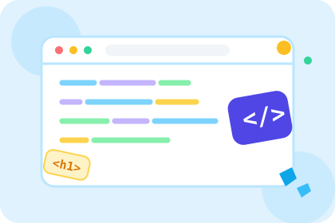
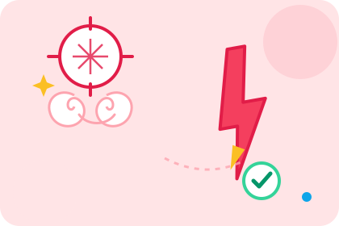

把网站做出来，
其实只有五层。
从想清楚要做给谁看，到写出第一行代码，再到让全世界都能打开它。这个站点把"做网站"拆成 5 个可掌握的子任务，一层一层带你走完。
五层路线图：每一步都有迹可循
不要跳层。上一层没想清楚，下一层就会反复返工。点击卡片进入对应层的详细教程。
规划层 · 想清楚
确定网站目标、目标用户与栏目结构，先画出骨架再谈代码。
进入教程 →
结构层 · 搭骨架
用语义化 HTML 把内容放对位置，让浏览器和搜索引擎都读懂。
进入教程 →
样式层 · 穿衣服
盒模型、Flex/Grid 布局与响应式设计，让页面好看又好用。
进入教程 →交互层 · 给灵魂
用 JavaScript 响应用户操作、更新页面内容、与后端交换数据。
进入教程 →
部署层 · 让所有人看到
域名解析、静态托管、HTTPS 与上线后的性能、安全清单。
进入教程 →综合实战 · 串起来
看一份最小可运行示例，理解 HTML、CSS、JS 三者如何协同工作。
查看示例 →一个网站从想法到上线的完整流程
五层之外，还需要一个"反复验证"的循环：做一点、看一点、改一点。
明确目标
一句话说清网站要解决什么问题、给谁用。
绘制结构
列出页面清单与栏目层级，画简单线框图。
编写内容
先有文案再有设计，避免被排版牵着走。
实现页面
HTML 搭结构 → CSS 做样式 → JS 加交互。
多端测试
在手机、平板、桌面检查布局与功能。
发布与迭代
部署上线，收集反馈，持续修正与优化。
最少的代码，看见三层如何配合
同一件事：HTML 负责"有什么"，CSS 负责"长什么样"，JS 负责"点了会怎样"。
<!-- ① 结构：内容与语义 -->
<!DOCTYPE html>
<html lang="zh-CN">
<head>
<meta charset="UTF-8">
<meta name="viewport" content="width=device-width">
<title>我的第一个网站</title>
<link rel="stylesheet" href="style.css">
</head>
<body>
<main>
<h1>你好，网页世界</h1>
<button id="hi">点我</button>
</main>
<script src="app.js"></script>
</body>
</html>/* ② 样式：变量、布局、响应式 */
:root { --brand: #4f46e5; }
* { box-sizing: border-box; }
body {
font-family: system-ui, sans-serif;
margin: 0;
}
main {
max-width: 720px;
margin: 40px auto;
}
button {
background: var(--brand);
color: white; border: 0;
padding: 10px 18px; border-radius: 8px;
}
@media (max-width: 600px) {
main { margin: 20px; }
}// ③ 交互：找到元素，监听事件
const btn = document.querySelector("#hi");
btn.addEventListener("click", () => {
alert("你好！这是 JavaScript 的回应。");
});
// 三个文件放在同一目录，双击 index.html 就能运行开始之前，你可能想知道
完全零基础，可以先学哪一层？
从「规划层」开始。它不需要任何代码知识，却能帮你建立对网站的整体认识。之后再按 HTML → CSS → JavaScript 的顺序推进，最后学习部署。
必须买服务器和域名才能做网站吗？
不必。学习阶段可以直接在本地创建 HTML 文件双击打开；想发布时，有很多免费静态托管平台可用。域名和服务器是进阶选项，详见「部署层」。
HTML、CSS、JavaScript 分别是什么？
HTML 定义内容结构，CSS 控制视觉表现，JavaScript 实现交互逻辑。可以把它们理解成建筑的骨架、装修与智能家居系统。
需要买软件吗？
不需要。系统自带的记事本就能写代码，推荐安装免费的 VS Code 编辑器，它有语法高亮和自动补全，效率更高。
这个站点本身是怎么做出来的？
它就使用了你正在学的这套技术：HTML 负责页面结构、一份共享 CSS 统一视觉、一段 JavaScript 处理菜单、标签切换和滚动效果，五个页面通过链接互联。
页面里的插画是哪里来的？
全部是本站点手写的原创 SVG 插画，包括吉祥物、五层主题图和站点图标；代码也是原创编写，没有使用网上下载的现成页面或素材，你可以在浏览器的开发者工具里查看它们的源码。